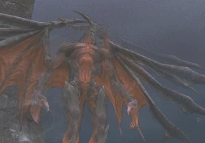

Level 75 reference · Zenith rules
Avatar Information
A Terrestrial Avatar, and creator of Dynamis, the Shrouded Land. Diabolos aids the summoner with his command over the power of dreams.
Summoners can acquire the ability to summon Diabolos by defeating him in Chains of Promathia Chapter 3-5: Darkness Named, which requires a party of level 40 members, then defeating him a second time in the quest Waking Dreams, which takes place in an uncapped battle that requires party members levels 70 to 75.
| Pet Information | |
|---|---|
| Name | Diabolos |
| Jobs | DRK/BLM |
| Traits | Magic Attack Bonus I andAttack Bonus I 10
Magic Attack Bonus II and Attack Bonus II 30 Magic Attack Bonus III and Attack Bonus III 50 Magic Attack Bonus IV and Attack Bonus IV 70 |
Has 82 INT at 75.
Has a 20% defense bonus at all levels.
Has lower attack delay than other avatars(besides Fenrir)
Boss Fight Information
|
Job: Notorious Monster |
 |

|
Zone |
Level |
Drops |
Steal |
Spawns |
Notes |
|
Unknown (Darkness Named) |
A, T(S) | ||||
HP = Detects Low HP; M = Detects Magic; Sc = Follows by Scent; T(S) = True-sight; T(H) = True-hearing JA = Detects job abilities; WS = Detects weaponskills; Z(D) = Asleep in Daytime; Z(N) = Asleep at Nighttime | |||||
Notes:
- Special Attacks:
- Is able to resist Stun.
- Darkness Named: Draw In, Sleepga and Sleep II, in addition to most of Diabolos's standard Blood Pact abilities, including Nightmare
- Waking Dreams: All of Diabolos's Blood Pact abilities including Cacodemonia (not available as a summoned avatar), in addition to Drain, Aspir, Dispelga, Blindga and Sleepga II
- Waking Dreams version of Diabolos is said to use Ruinous Omen at approximately 50% of health. Will also use Nightmare far more regularly at this stage
Blood Pacts
Diabolos's Blood Pacts are dark-based.
| Blood Pact | Level | MP | S/T1 | R/W2 | Description | Comment |
|---|---|---|---|---|---|---|
| Ruinous Omen | 1 | LVx2 | T | R | Required MP: Caster's level x2. Uses all MP and reduces the HP of enemies within Area of Effect by a random percentage. | Prime Avatar's use is far more powerful than a summoner's. |
| Camisado | 1 | 20 | S | R | Deals physical damage. | |
| Somnolence | 20 | 30 | T | W | Weighs target down. | |
| Nightmare | 29 | 42 | T? | W | Deals darkness elemental damage that puts all enemies within Area of Effect to sleep and gradually reduces their HP. | To completely remove effect, must cast Cure (to wake player up) and Erase (to remove Bio effect). |
| Ultimate Terror | 37 | 27 | T? | W | Decreases attributes of enemies within Area of Effect. | |
| Noctoshield | 49 | 92 | W | Gives party members within Area of Effect the effect of "Phalanx." Lasts 180 seconds. | ||
| Dream Shroud | 56 | 121 | W | Enhances magic attack and magic defense of party members within Area of Effect. Lasts 180 seconds. | ||
| Nether Blast | 65 | 109 | T? | R | Delivers a ranged attack that deals darkness elemental damage. | Ignores Ninja shadows & deals direct damage. |
| Cacodemonia | N/A | N/A | T? | Curses enemies within Area of Effect. (Note: This ability is only used by the Prime Avatar) | AoE Curse that reduces HP and MP by 40%. |
1 S/T column indicates whether a particular Blood Pact participates in Skillchains (S) or uses TP (T). Blood Pacts that use TP can be used as a Magic Burst, with the exception of Astral Flow abilities which do not use TP.
2 R/W column indicates if the ability is activated using the Blood Pact: Rage or Blood Pact: Ward pet commands.
Other Information
- Diabolos is also the name of a server.
| Magic of Vana'diel: Summoning Magic |
|---|
| Avatars:
Carbuncle • Diabolos • Fenrir • Garuda • Ifrit • Leviathan • Ramuh • Shiva • Titan |
| Spirits:
Air • Dark • Earth • Fire • Ice • Light • Thunder • Water Magic Category Jump: Blue Magic • Dark Magic • Divine Magic • Elemental Magic • Enfeebling Magic • Enhancing Magic • Healing Magic • Ninjutsu • Songs • Summoning |
Adapted from Eden Wiki: Diabolos · Contributors and history · CC BY-SA 4.0. Revision 44469. Layout, links and optional background text adapted for Zenith.